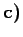

Inhalt Index DeskTop Bronstein

 Optimierung Nichtlineare Optimierung Numerische Suchverfahren
Optimierung Nichtlineare Optimierung Numerische Suchverfahren


Die Suche nach einer Näherung für einen Minimalpunkt  des Problems , kann auf die Lösung einer Folge eindimensionaler Optimierungsprobleme zurückgeführt werden.
des Problems , kann auf die Lösung einer Folge eindimensionaler Optimierungsprobleme zurückgeführt werden.
| (18.70a) |
Man löst für  die eindimensionalen Probleme
die eindimensionalen Probleme
| (18.70b) |
Ist ein Minimalpunkt bzw. eine Näherung des r-ten Problems, dann setzt man .
 Unterscheiden sich zwei aufeinander folgende Näherungen hinreichend wenig, d.h. gilt für die Norm
| (18.70c) |
dann ist  eine Näherung für . Anderenfalls geht man mit k + 1 an Stelle von k zu Schritt b über. Die eindimensionalen Probleme im Schritt b) können unter anderem auch mit den unter Eindimensionale Suche beschriebenen Suchverfahren gelöst werden.
eine Näherung für . Anderenfalls geht man mit k + 1 an Stelle von k zu Schritt b über. Die eindimensionalen Probleme im Schritt b) können unter anderem auch mit den unter Eindimensionale Suche beschriebenen Suchverfahren gelöst werden.